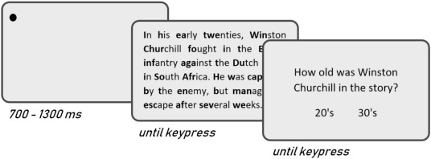
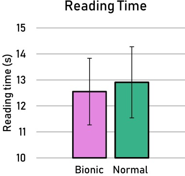

No, Bionic Reading does not work
Abstract
It has recently been claimed that presenting text with the first half of each word printed in bold (as is done in this example), so-called Bionic Reading, facilitates reading. However, empirical tests of this claim are lacking, and theoretically one might expect a cost rather than a benefit. Here I tested participants' reading speed of 100 paragraphs that were presented either in 'Bionic' or in normal font. Statistical analyses revealed no significant difference in reading times between Bionic and normal reading. I conclude that Bionic Reading does not facilitate reading.
1. Introduction
Reading is a challenging cognitive task for various reasons. Text constitutes a very homogeneous visual landscape wherein no single location stands out on the basis of saliency. Therefore, the small, careful, precise eye movements that typify reading have to be made with limited visual cues. In addition to the planning and execution of eye movements, the brain has to retrieve meaning from a myriad of small squiggly lines, typically viewing words no longer than ~200 ms (e.g., Rayner, 1998). For these reasons it may seem somewhat miraculous that reading appears effortless and automatic to most of us; and conversely, it might not be so surprising that >10 % of the population struggles when reading (e.g., Chung, 2020; Wagner et al., 2020).
Given the societal importance of reading, searching for ways to facilitate the process—either in clinical groups or in the population at large—seems a sensible endeavor. Reading researchers have conceived and tested several ideas in this regard, such as fonts that increase the discriminability among letters (e.g., Bernard, Aguilar, & Castet, 2016), or training regimes and interfaces for reading with visual impairments (e.g., Akthar, Harvey, Subramanian, Liversedge, & Walker, 2021; Chung, 2011; Snell, van Kempen, & Olivers, 2022). And naturally this endeavor is not exclusive to scientists. Currently there are several commercial parties that offer tools for facilitating reading. One example is the company Spritz, which sells an application that presents words rapidly one-at-a-time, with the promise of letting users process text faster. Other examples are companies that sell fonts for better reading in dyslexia, such as Dyslexie Font and OpenDyslexic.
Surely brilliant ideas do not warrant doctoral degrees. However, the claims of these companies are not always supported by rigorous, peer-reviewed scientific study. In fact, in the case of Spritz, studies suggest that the rapid serial word presentation goes at the cost of comprehension (Acklin & Papesh, 2017; Benedetto et al., 2015). Meanwhile, Dyslexie Font and OpenDyslexic do not work according to the few studies that have put them to the test (Kuster, van Weerdenburg, Gompel, & Bosman, 2018; Wery & Diliberto, 2017).
I will not question here whether these companies have their users' best interest at heart. But society will anyhow have to make do with the fact that a product's efficacy and scientific support are no prerequisites to commercial release. But occasionally, when an idea has appeal for both fundamental and practical reasons, science may step in to bear the burden of proof. The application Bionic Reading is the latest such idea, and the present study marks its first scientific challenge.
1.1. Bionic Reading
The application Bionic Reading presents text with the first half of each word's letters printed in bold (as is done in this example). It is claimed that this helps readers to focus on each word better, hence facilitating word recognition. Furthermore, the bold letters would mark visual anchor points for making accurate eye movements to optimal locations within words. The company describes its product as allowing readers to “[…] 'skip' over words and text […] similar to a surfboard that only glides on the tip of the waves”.
Does the literature provide reasons to foresee such a sensational surfing spectacle? It appears that one could make arguments both for- and against the concept; and when adding things up, it remains to be seen whether the reader surfs or sinks.
Let us first consider the good. It has been established that, in languages that read from left to right, it is beneficial to fixate words just left of the word's center: this is the so-called optimal viewing position effect, which can be attributed to several factors, such as attentional biases, hemicortical asymmetries in linguistic processing and higher information richness in words' left halves than right halves (e.g. 'ta' is more suggestive of 'table' than is 'le'; Clark & O'Regan, 1999; Shillcock, Ellison, & Monaghan, 2000; for a review, see Brysbaert & Nazir, 2005). The eyes do not always land at this optimal location, however. As suggested before, eye movements in text reading are made with limited visual cues, and estimation errors regularly cause the eyes to land left or right of the intended target location (see e.g. Rayner, 1998; and for computational implementations of the principle, see Engbert, Nuthmann, Richter, & Kliegl, 2005; Snell, van Leipsig, Grainger, & Meeter, 2018). Thus, making words' left halves more salient—as is possibly realized with the bolding of these letters in the Bionic setup—might help the eyes to land closer to the optimal viewing position.
Now let us consider the bad. Normally, efficient reading is realized in part because the brain does not only rely on bottom-up processing of visual input, but also on top-down predictions about upcoming text (e.g., Amenta, Hasenäcker, Crepaldi, & Marelli, 2023; Brothers, Swaab, & Traxler, 2015). Furthermore, processing of a word typically starts prior to its fixation (e.g., Dare & Shillcock, 2013; Kennedy & Pynte, 2005; Snell, Vitu, & Grainger, 2017). These factors allow us to recognize a good portion of words even before looking at them; and hence, ~35 % of words—particularly words that are short, highly frequent and/or highly predictable—are never looked at at all (e.g., Slattery & Yates, 2018). Bearing this in mind, the fact that all words are (presumably) more salient in Bionic Reading may actually be detrimental. If the eyes are led toward words' salient letters, as was argued above, then it may also become more difficult to skip the ~35 % of words that do not warrant a fixation. And if reading in the Bionic setup is indeed typified by a high number of unnecessary fixations, then it is unlikely to be fast.
Lastly, readers may incur a detriment from the visual inconsistency between words' bold and non-bold letters. Although no prior research has investigated effects of partially bolding words, in one study it was observed that within-word font inconsistency (effectuated by mixing letters from two different fonts) leads to slower reading (Sanocki, 1988). On the other hand, De Simone, Moll, Feldmann, Schmalz, and Beyersmann (2023) did not observe a detriment when presenting words in two different colors (e.g., presenting 'research' with 're' in red and 'search' in blue); but it is worth noting that, in their study, words were always 'meaningfully' split, either at the level of syllables or at the level of morphemes. In Bionic Reading, the split between bold and non-bold letters is determined by a fixed proportion (e.g., 50 % rounded down, so that 'research' is split between 'rese' and 'arch'), thus potentially harming the processing of linguistically meaningful units such as morphemes or syllables, which are known to play an important role in word recognition (e.g., Hasenäcker & Schroeder, 2017).
1.2. The present study
Summarizing the above, on the one hand Bionic Reading might facilitate reading by guiding the eyes to optimal locations within words; but on the other hand Bionic Reading may be detrimental because it may force a considerable number of unnecessary fixations on words that would otherwise be skipped. Lastly, Bionic Reading may impair word recognition because of the visual inconsistencies within words that are applied without consideration for syllable or morpheme boundaries. Clearly, then, an empirical test of the method's efficacy is due.
Here I tested a group of participants who were not yet familiar with Bionic Reading on reading speed with 100 paragraphs that were presented either in the Bionic setup or normally. To preview results, I observed no benefit of Bionic Reading over normal reading. All data, stimuli and analysis scripts are openly accessible on https://osf.io/jzbae/.
2. Methods
Ethical approval for this study was granted by the ethical committee of the Faculty of Behavioural and Movement Sciences from the Vrije Universiteit Amsterdam. The study was not pre-registered. Thirty-two students from the Vrije Universiteit Amsterdam gave informed consent to participate in this study for course credit or monetary compensation. All participants reported to be native to the Dutch language, non-dyslexic, and to have normal vision.
A stimulus set of 100 texts was devised by extracting paragraphs from various Dutch news websites. For twenty texts I created a Two Alternatives Forced-Choice (2AFC) question about the text. These questions, which would thus appear on one out of every five trials, were used to motivate participants to read for context comprehension. Texts were on average ~45 words long (SD = 9.48).
With a Latin-square design I ensured that each text was tested both in a Bionic Reading condition and in a normal control condition, while being seen only once per participant. Participants were exposed to a block of Bionic Reading and a block of normal reading, each comprising 50 texts, whereby the order of blocks was counterbalanced. As such the experiment comprised 1600 measurements per condition across the entire participant sample, which is in line with the recommendations of Brysbaert and Stevens (2018) for a statistical power of ~0.80. The order of texts within blocks was random.
The trial procedure is shown in Fig. 1. Every trial started with a fixation dot left of where the first word of the text would appear. After a randomly chosen interval between 700 and 1300 ms, the text would appear, in 22px Serif font, with single line spacing and with a maximum of 42 character spaces on each line; (words that did not fit on the line would move to the next). Participants were instructed to read all texts normally, and to press the spacebar once they had finished reading the text. The time between text onset and the spacebar press was taken as measure of reading speed. Participants were also instructed that they would occasionally receive a question about the previous text, in order to ensure that they read for comprehension. The 2AFC questions were answered with a left- or right-handed press of the 'Z' or '/' key, respectively, and for correct and incorrect answers the participant was provided feedback with a green or red central fixation dot, respectively.

Fig. 1. Trial example. The size of letters relative to the screen is exaggerated here for the sake of visibility.
The entire experiment took approximately 20 min. Participants were offered a break in between blocks, and the 100 experimental trials were preceded by four practice trials, each of which comprised a 2AFC question.
3. Results
All 32 participants had comprehension scores >70 % (M = 90 %, SD = 0.07). Prior to all analyses, trials with a reading time beyond 2.5SD from the grand mean were discarded. This entailed the removal of 84 out of 3200 trials (2.63 %) which exceeded a cut-off boundary of ~30 s.
Data were analyzed with a linear mixed-effect model (LMM) with Mode (Bionic vs. Normal) as fixed effect and Participants and Items as random effects. The LMM converged successfully with intercepts and slopes for both random effects. Below, I report b-values, SEs and t-values, with values |t| > 1.96 deemed significant.
Results are plotted in Fig. 2. No significant difference between Bionic Reading and normal reading was observed (with Bionic as ref.: b = 0.35, SE = 0.39, t = 0.89).

Fig. 2. Average reading times (s) in Bionic and normal reading, respectively. Error bars indicate SEs.
Might readers need some time to get used to the Bionic setup, meaning its facilitatory impact would only show on later trials? In order to investigate this, I isolated for all participants the latter half of trials read in Bionic. Contrasting these trials against the trials in which participants read text normally, I still observed no significant difference between the two conditions (with Bionic as ref.: b = -0.26, SE = 0.44, t = -0.59).
Might Bionic Reading specifically aid poorer readers? In a final post-hoc analysis I divided participants into two groups via a median split of average individual reading times. No difference between Bionic and normal reading was observed either in the slower group (b = 0.58, SE = 0.75, t = 0.78) or in the faster group (b = 0.23, SE = 0.48, t = 0.48); and when combining both groups, there was also no interaction between reading condition and individual reading speed (b = 0.09, SE = 0.12, t = 0.72).
4. Discussion
Given the societal importance of reading, it is worth investigating potential ways to facilitate the process. Bionic Reading, whereby words' initial letters are presented in bold, is an interesting concept because it can be theoretically motivated in terms of processes relating to attention and oculomotor control (i.e., salient letters would guide the eyes toward optimal viewing locations within words). On the other hand one might also predict a detriment, due to salient letters causing unnecessary fixations on words that would otherwise be skipped, and due to visual inconsistencies within words caused by bold versus non-bold letters with a disregard for syllable- or morpheme boundaries (e.g., Hasenäcker & Schroeder, 2017). With all these factors in mind, here I carried out a first empirical test of the method's efficacy.
The present results do not provide evidence that Bionic Reading is helpful. The absence of a difference between Bionic and normal reading held true both in early and late trials, and both in slower and faster readers. As a note of caution I may add that absence of evidence is not evidence of absence; and I should emphasize that Bayesian statistical analyses provided strong evidence neither for the alternative-, nor for the null-hypothesis (Footnote 2). This was in spite of the fact that, with 1600 measurements per condition, the study met the recommendations of Brysbaert and Stevens (2018) for an a priori estimated statistical power of ~0.80. Possibly some small but significant benefit of Bionic Reading might be observed when testing a sample that is several orders of magnitude greater than the present sample of 32 participants; but if that would be what is needed to argue for the method's efficacy, then the method would definitely not be guaranteed to benefit the individual reader.
It nonetheless deserves mentioning that I tested university students here, none of whom reported to be dyslexic. The absence of an interaction with individual reading speed should therefore be seen as a mere preliminary sign that Bionic Reading's efficacy is not a function of the user's proficiency. Particularly given the above considerations I leave open the possibility that the method may help people with serious reading difficulties, as is the case in dyslexia. That being said, the theoretical underpinnings of the method as described in Section 1.1 apply to non-dyslexic readers all the same; and indeed, the company's central claims are addressed to the general population, rather than dyslexic readers in specific. Thus, even if future investigations reveal a benefit for dyslexic readers, the present results would nonetheless warrant attenuation of the claims that are currently being made.
I should also acknowledge that the present results merely suggest that Bionic Reading does not work, without answering the question of why the method does not work. As such this study is more practical than theoretical in nature. I noted before that Bionic Reading may be detrimental for reasons relating either to orthographic processing (due to visual inconsistencies within words) or to oculomotor processing (due to prohibition of word skips). I reckon the relative importance of these two factors may be effectively investigated with the employment of eye-tracking in future studies. My prediction would be that Bionic Reading leads to a decrease in word skipping probability, possibly compensated by shorter fixation durations (hence the null-effect in the present study).
Does science provide perspectives for improving the method, whereby the bad is omitted while the good is preserved? My hunch is that large language models may be key here. Large language models allow one to compute key (information-rich) locations in textual input, where entropy is optimally reduced and upcoming text can thus be optimally predicted (e.g., Touvron et al., 2023). If a reading interface were to solely present the letters at these locations in bold, the eyes would not be drawn to unnecessary locations. I wager that this would improve reading. Naturally such an approach also has practical limitations: prior to reading any text, one would have to let that text be processed by a large language model; and this is, at present, quite time-consuming. Time will tell whether society's clever minds—be they scientists or business entrepreneurs—can overcome these challenges.
Tell me about the main takeaways of this paper.

The main takeaways from this paper are centered around the investigation into the efficacy of Bionic Reading, a method where the first half of each word is bolded with the intention to facilitate reading. The study found no significant difference in reading speed or comprehension between Bionic and normal reading formats across various measures, including among faster and slower readers, or over time with familiarization. The theoretical background suggested potential reading benefits due to improved fixation and recognition, as well as drawbacks due to possible unnecessary fixations and visual inconsistencies. However, these potential effects were not observed in the empirical studies conducted. The results indicate that while Bionic Reading does not hinder reading, it also does not provide the purported reading facilitation benefits.